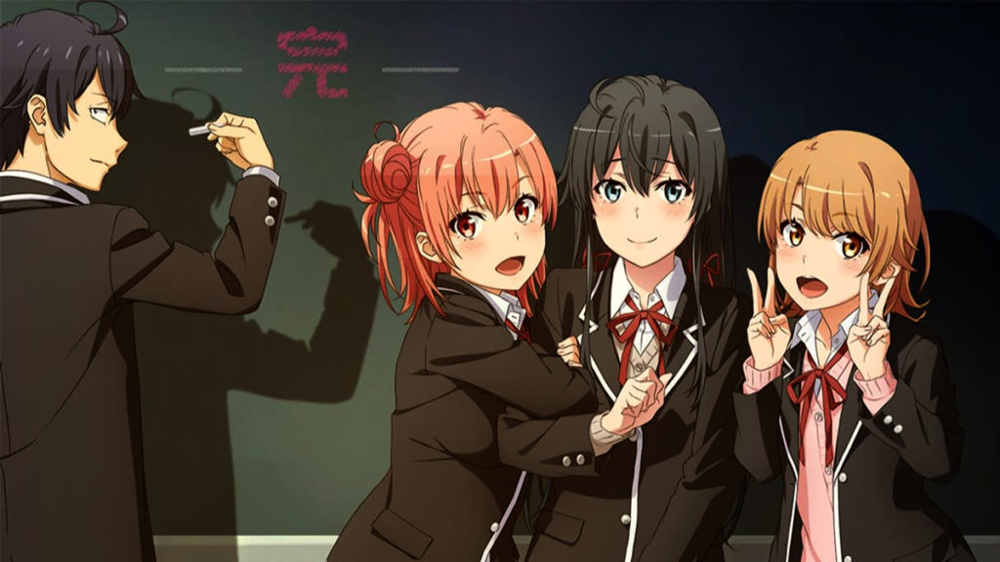
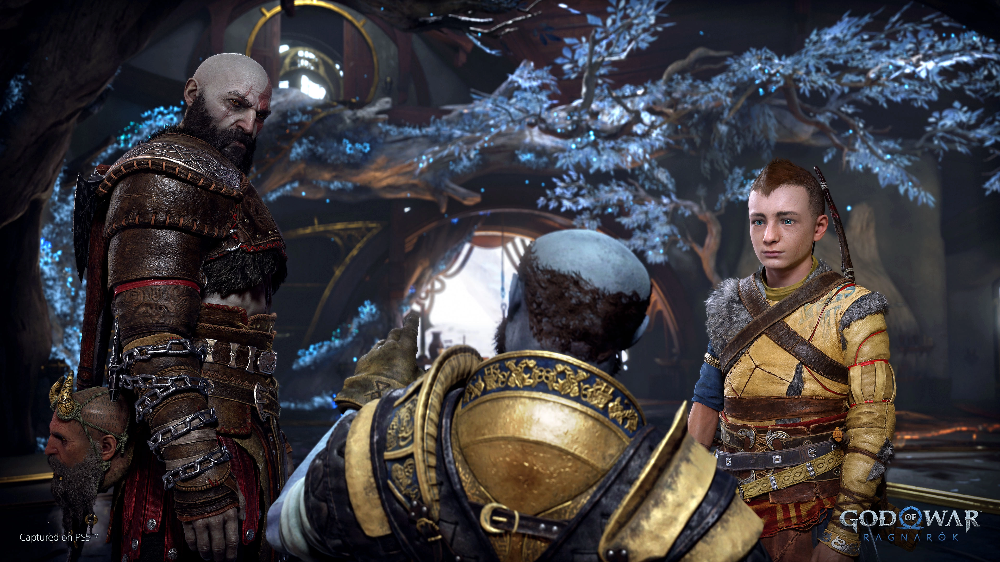
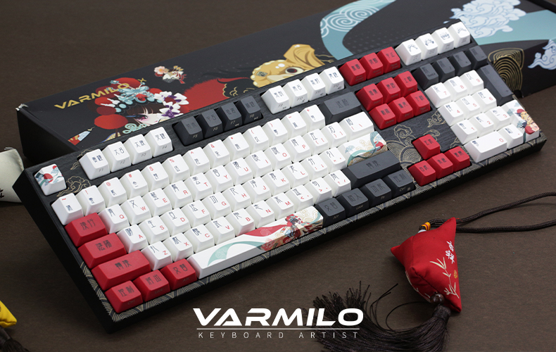

En el número más reciente de la revista Weekly Shonen Jump, se informó que la serie de manga escrita e ilustrada por Kohei Horikoshi, Boku no Hero Academia (My Hero Academia) , entró formalmente en su arco final con el lanzamiento del capítulo número 306.
ANIME: Oregairu tendrá un nuevo proyecto y un nuevo OVA.

Uno de los anime más populares de comedia romance, indudablemente es Yahari Ore no Seishun Love Comedy wa Machigatteiru, mejor conocido como Oregairu. En nos cuentan la típica historia de amor entre estudiantes con un distintivo estilo de humor que ha conseguido fascinar a sus espectadores, pero cabe resaltar que no es su único atractivo y con ello queremos decir, que sus protagonistas se han convertido en todas unas waifus y gracias a ello, tenemos nueva mercancía de la franquicia.
Video Juegos: Salen a la luz nueva informacion acerca de God of War Ragnarok

Tras convertirse en una de las mayores franquicias de la familia PlayStation, la saga God of War vuelve con el nuevo God of War Ragnarok para PS5 y, con ello, la épica continuación de la historia de Kratos y su hijo Atreus por parte de Sony Santa Monica.
Teclados: Todo lo que tienes que saber para adentrarte al mundo de los teclados custom

El teclado custom está cada vez más de moda y es más habitual encontrarte a grandes youtubers dando el salto al «caviar de los teclados». Pero estos, llevan un buen tiempo pegando fuerte en programadores / desarrolladores y en jugadores que buscan la mejor experiencia en el tipeo y/o jugando.
Algunas personas siempre se lanzan las siguientes preguntas: ¿Es difícil montarse un teclado custom? ¿Cuánto me tengo que gastar para un buen teclado? o quizás, no sepas por donde empezar… Te lo dejamos todo bastante fácil en este artículo, en el conocerás todo lo que necesitas saber sobre el mejor periférico del PC.
Los In-Ear Monitors (IEM) son auriculares utilizados por audiófilos, compositores, ingenieros de sonido e intérpretes en vivo. Están fabricados con materiales de primera calidad como acrílico, metal y resina junto con plástico. Como su nombre indica, están ocultos dentro del canal auditivo y permiten que el monitoreo de audio mezcle y masterice pistas en un estudio profesional, escuche música con una claridad excepcional y más.